Beneficial Chrome replacement. Vivaldi
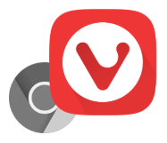
I had been using Chrome for a quite long time as many others certainly. That's a good, modern, powerful browser. During usage of it for a job purpose, i found more and more features it's good to have to simplify different operations and keep them productive. Along with it, there was a number of things that make me annoyed and overwhelmed, for example, the cookie banners and pervasive Google account as i'm an Android devices user.
One day i saw Vivaldi and it looked promising in regard to my wishes. A big and significant detail of why i installed and tried it out is both are chromium-based.
Here i'd like to share a list of specific benefits that i got when completely replaced Chrome with Vivaldi on my laptop and mobile phone.
Customizable trackers and ads blocking sources
Nowadays, ads and trackers are everywhere but i didn't give my vote to it. Don't assault me with the pesky, blinking HTML blocks and don't track what i'm doing.
Previously i used a Chrome extension and it didn't block all kinds of ads. The extension even had a paid plan for their users, if you don't want to see the most spread ads just pay them, great business, isn't it?
Vivaldi cuts it off and you can choose a blocking source.
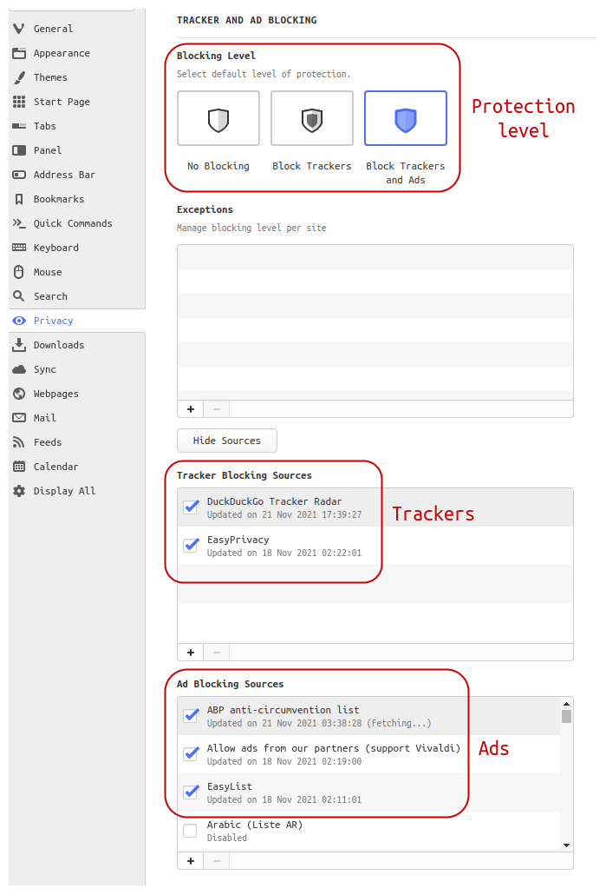
No more annoying cookie banners
Since the GDPR regulation, i have been encountering cookie banners on hundreds of websites and have to click more than one button all the time to accept required only cookies. This setting get me rid of such a bothering routine. In 95% of cases, i don't see it anymore.
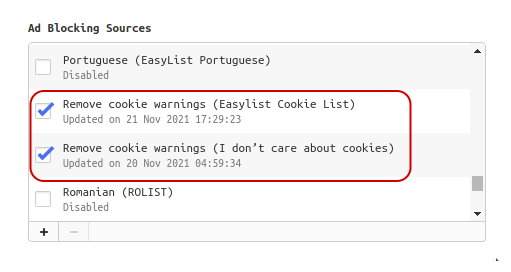
Tabs tiling, stacking, and pinning
As i do research regularly while working i keep many pages open and click them back and forth. The tiling lets me group some resources in one visual space.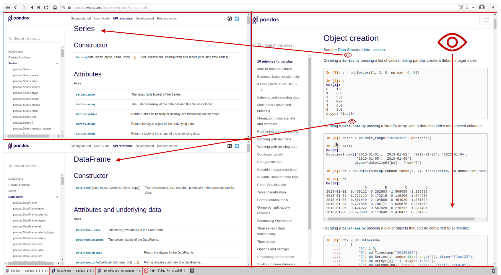
Tabs organizing is extremely helpful in the case of dozens of open ones.
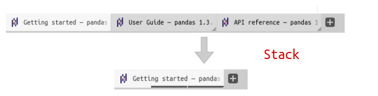
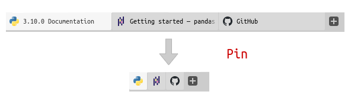
Minimalistic UI
One line for Address bar and one line for Tab bar. Distractions free!
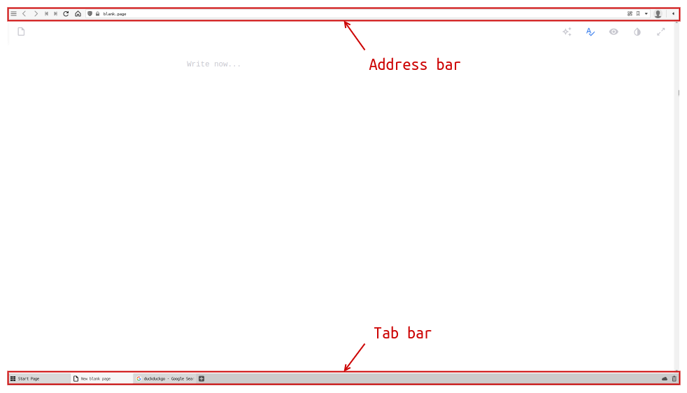
No auto Google account logging in
Chrome as a Google product is integrated with its global account and brings you to a fact that if you log in Chrome for syncing you are automatically logged in to all Google's service sites. That's not great. Personally, i find it very insecure especially on a mobile phone.
Page actions
Actions are features applicable on per page basis and they are persistent:
- Filter Invert. Turn a dark mode on even if a website has its own setting.
- Fonts Monospace. Convert any page fonts to the defined one in the settings.
- Page Minimap. General visual representation of an entire page.
- Many others...
| Original view | Actions view |
|---|---|
| 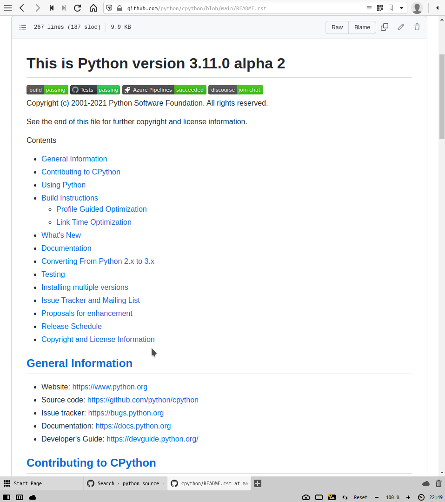 | 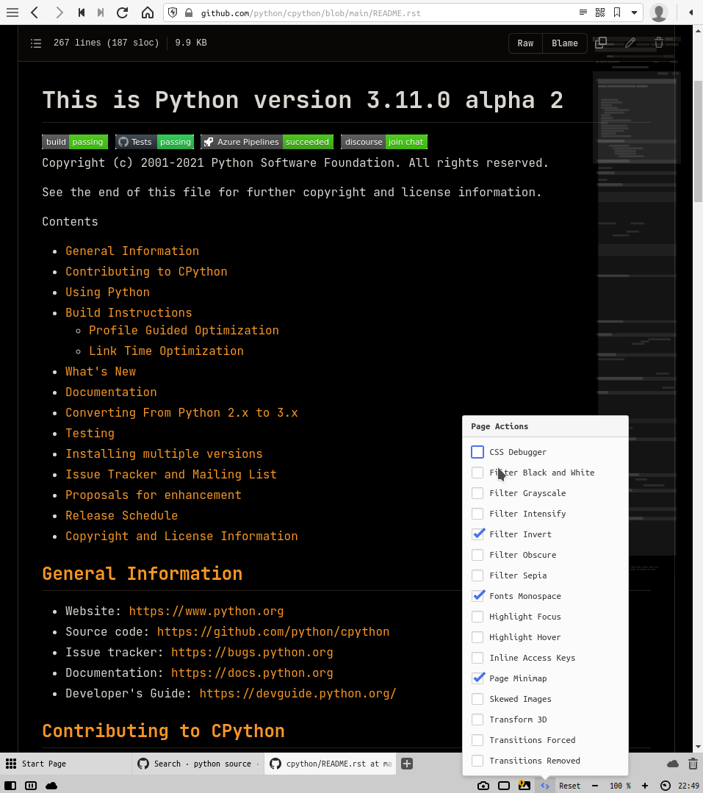 |
Quick commands Popup
That is all functionalities in one container. Press F2 or Ctrl + E to run a command, Find in Page for example. If You are used to using your desktop command pallet, in a KDE desktop it is Ctrl + Space keyboard shortcut, then no explanations are needed. My particular case of its' usage is running a page action, mostly Filter Invert.
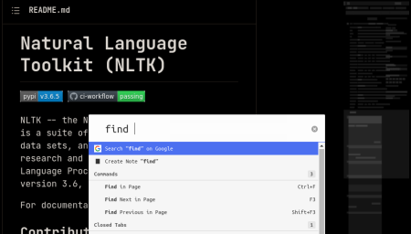
Reader view
Convert any article page to a unified view, what a vital feature. Take all those bells and whistles to a simple appearance to focus on reading and understanding content. Set up the font size, width, height, and theme.
| View | Picture |
|---|---|
| Original | 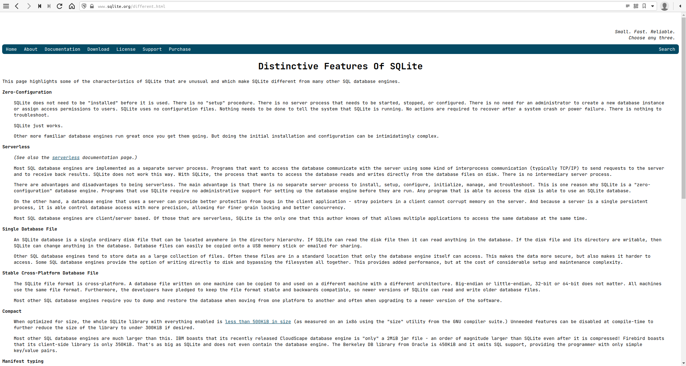 |
| Reader | 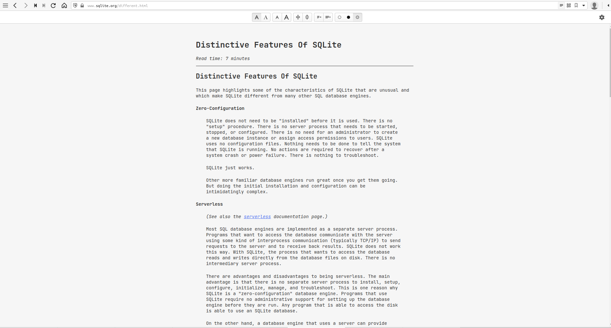 |
Cross-platform and syncing
This feature works identically as Chrome's one does. Pay attention to synced data is encrypted!
| Desktop settings | Mobile settings |
|---|---|
| 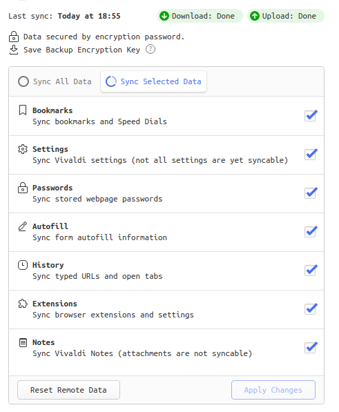 | 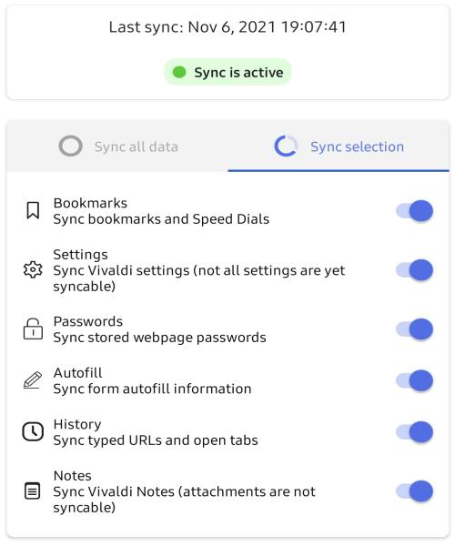 |
Screenshots
Actually, OS has a native screenshot utility but a webpage can't be entirely captured by it. This is where Vivaldi's ability comes to play. If a webpage is very long down Vivaldi save the entire size.
Mouse gestures
Typical operations can be performed by mouse. That's interesting, would you find the operations to delegate them to mouse actions? There is a bunch of ones to assign the gestures to, scroll the list down.
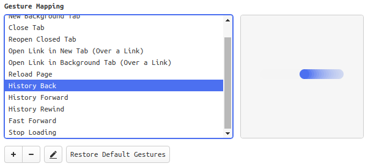
The best combination of navigation in my opinion is Rocker gestures. Hold your right mouse button on and go back in history clicking the left button. Vice versa in opposite direction.
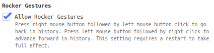